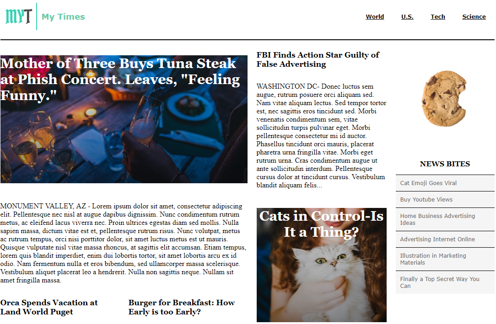

Colmar Academy
 Visit Colmar Academy Site
Visit Colmar Academy Site
Capstone project from
Codecademy Pro Intensive - Build Websites from Scratch. This
website is a mock up of a fictional educator's site complete with
logo, nav, imgs, and video. This site is designed to be responsive
and a separate css sheet is called when browser width falls below
500 DIPs.
MY Times

Visit MYTimes Site
Exercise from Codecademy Pro Intensive
- Build Websites from Scratch. This website is a mock up of a fictional news
site complete with logo, nav, imgs, and a multi-column layout.
Tea Cozy
 Visit Tea Cozy Site
Visit Tea Cozy Site
Exercise from Codecademy Pro Intensive
- Build Websites from Scratch. This website is a mock up of a fictional tea
cafe's site complete with logo, nav, imgs, and utilizes flexbox.